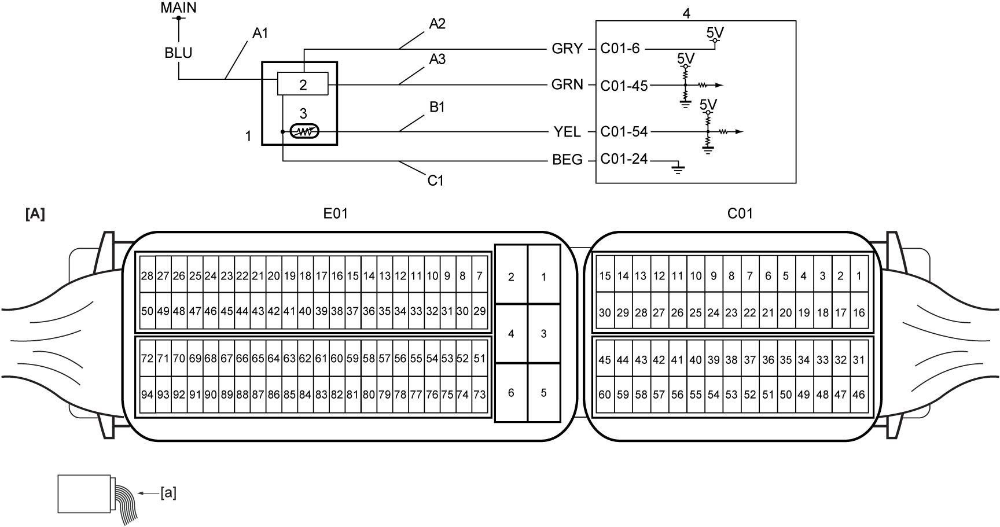

1A
| DTC P0100 / P0102 / P0103 |
DTC Detecting Condition and Trouble Area
| DTC detecting condition | Trouble area |
|---|---|
|
P0100: Mass or Volume Air Flow “A” Circuit Output voltage of MAF sensor signal circuit is higher than 0.5 V, even if MAF sensor power supply is shut-off. (3 D/C detection logic but MIL does not light up) |
•MAF sensor and/or its circuit
•ECM |
|
P0102: Mass or Volume Air Flow “A” Circuit Low Output voltage of MAF sensor signal circuit is lower than 0.28 V for 5 sec. (1 D/C detection logic) |
|
|
P0103: Mass or Volume Air Flow “A” Circuit High Output voltage of MAF sensor signal circuit is higher than 4.98 V for 5 sec. (1 D/C detection logic) |
Circuit Diagram

 "Expand image")
| [A]: | ECM connector (View: [a]) | B1: | IAT sensor-1 signal circuit | 3. | IAT sensor-1 |
| A1: | MAF sensor power supply circuit | C1: | MAF sensor with IAT sensor-1 ground circuit | 4. | ECM |
| A2: | MAF sensor reference voltage circuit | 1. | MAF sensor with IAT sensor-1 | ||
| A3: | MAF sensor signal circuit | 2. | MAF sensor |
DTC Confirmation Procedure
P0100
NOTE:
•Check that the following condition is met in this “DTC Confirmation Procedure”.
—11 V < Battery voltage < 18 V
•Check that the following DTCs are not detected in this “DTC Confirmation Procedure”.
—System voltage (P0560, P0562 and P0563)
1)When engine is stopped by engine auto stop control, keep the state for 1 min.
P0102 / P0103
NOTE:
Check that the following condition is met in this “DTC Confirmation Procedure”.
•Battery voltage > 11 V
1)Run engine at idle speed for 1 min.
DTC Troubleshooting
| Step | Action | Yes | No |
|---|---|---|---|
| 1 |
Was “Engine and Emission Control System Check” performed?
|
Go to Step 2.
|
|
| 2 |
MAF sensor power supply circuit check
1)With ignition “OFF”, disconnect connector from MAF sensor with IAT sensor-1.
2)Check for proper terminal connection to MAF sensor with IAT sensor-1 connector.
3)If connections are OK, set ignition “ON”.
4)Check that voltage between “A1” and “C1” is battery voltage.
Is check result OK?
|
Go to Step 4.
|
Go to Step 3.
|
| 3 |
MAF sensor with IAT sensor-1 ground circuit check
1)Check that voltage between “A1” and ground is battery voltage.
Is check result OK?
|
Repair “C1” circuit.
If this DTC is detected again, replace ECM and recheck DTC.
|
Repair “A1” circuit.
|
| 4 |
MAF sensor reference voltage circuit check
1)Check that voltage between “A2” and “C1” is approx. 5 V.
Is check result OK?
|
Go to Step 5.
|
Repair “A2” circuit.
If this DTC is detected again, replace ECM and recheck DTC.
|
| 5 |
MAF sensor signal circuit check
1)With ignition “OFF”, disconnect “C01” and “E01” connectors from ECM.
2)Check for proper terminal connection to “C01” and “E01” connectors.
3)If connections are OK, check the following points.
•Resistance of “A3” circuit: less than 1 Ω
•Resistance between “A3” circuit and ground: infinity •Resistance between “A3” circuit terminal and other terminal at MAF sensor with IAT sensor-1 connector: infinity •Voltage of “A3” circuit: approx. 0 V (When ignition is “ON”) Is check result OK?
|
Go to Step 6.
|
Repair or replace defective wire harness.
|
| 6 |
MAF sensor check
1)Check MAF sensor.
Is check result OK?
|
Replace ECM and recheck DTC.
|
Replace MAF sensor with IAT sensor-1.
|